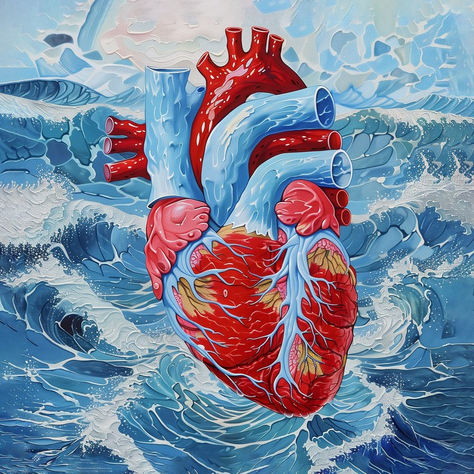

Systolic Sea
la systole
Un cœur humain, rouge et bleu, surgit d’une mer agitée : l’aorte et les artères pointent hors de l’écume comme des récifs, et les vagues se brisent tout autour sans jamais l’emporter. J’ai pensé au rythme qu’on ne choisit pas, cette systole qui revient environ cent mille fois par jour. C’est un original de 80 × 80 cm que je peins à la commande pour un cardiologue ou un chirurgien cardiaque, et le délai vous est confirmé par e-mail.
- Original, huile sur toile, 80 × 80 cm, peint à la commande 2 600 €
Voir l’œuvre sur med-san.art (s’ouvre dans un nouvel onglet)